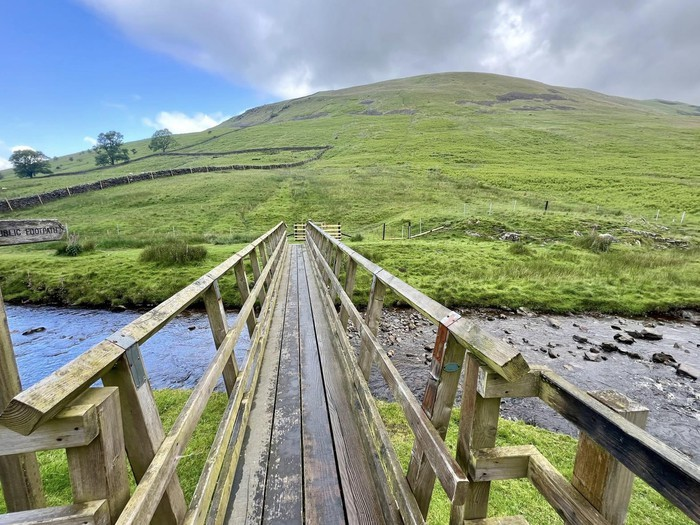

- St Bartholomew’s ChurchInformation on St Bartholomew’s ChurchChurch →
- Parish CouncilInformation on the Parish CouncilParish Council →
- Village HallInformation on the Village HallVillage Hall →
Barbon and Middleton Newsletter
The latest version of the Barbon and Middleton Newsletter is available at – Newsletter. Please click here for – Previous Issues.
The newsletter is published quarterly – March, June, September, December. To sign up for this to be emailed and a limited amount of other Barbon and Middleton news please go to – Sign Up
The closing date for content for the newsletter is the 15th of the previous month. Please send to newsletter@barbon.org.uk
Barbon and Middleton Annual Flower Show
The Barbon and Middleton Annual Flower Show will take place on Saturday 8th August at Barbon Village Hall. The programme is available from the Church porch or the Village Hall or click here.


If you wish to contact me about the website or other matters please do so – merlin@barbon.org.uk